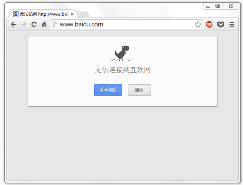
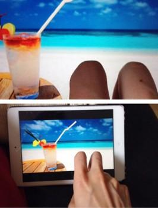
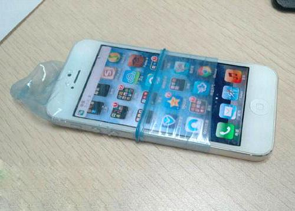
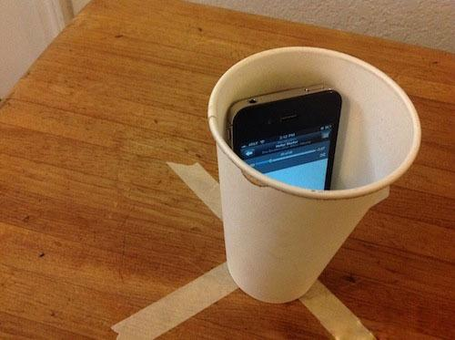
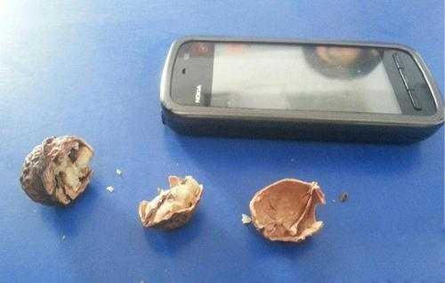

ある日の午後、皆がうとうとしていると、科技チャンネル一番の物静かなイケメン、小石君がiPhoneを高々と掲げ、カメラの真下にあるフルーツのロゴをじっと見つめていた。いくら考えても分からず、私は「恥を忍んで教えを乞う」精神を発揮して、恐る恐る尋ねに行った。
小石君はさすが自撮り学科の優秀な卒業生。私を引き寄せて近くで見せながら、秘蔵の知識を惜しみなく伝授してくれた：「分かっただろう、iPhoneの背面にあるアップルのロゴは、自撮りのときに鏡として使えるんだ！」
たちまち、耳元で雷が鳴り響くような衝撃が走った。その後、風雨を経験してきた私だが、ようやく気づいたのは——以下で見るものに比べれば、こんなのはまだ序の口だということだった。
1. 百度（バイドゥ）：ネット第一の検出神器
もし百度（バイドゥ）さえ開けなくなったなら、ネットワークは99.99999999%の確率で故障している。ある人が聞く：「じゃあGoogle（微博）は？」Googleって何だっけ……

2. iPhone：妻の所在確認の秘密兵器
この機能は家庭の平とを壊す恐れがありますので、ご利用は慎重に。『旦那のスマホを持って女友達の家に行ったら自動でWi-Fiに繋がった』なんてのはまだまだ甘い。旦那/彼氏のスマホを手に取って、順に：設定→プライバシー→位置情報サービス、一番下までスクロールし、システムサービス→よく行く場所→履歴を選択して、一つずつタップする。彼がどこに行ったか、何時に行ったか、どのくらい滞にしたか、はっきり分かる。

3. 微信（WeChat）：方向音痴キラー
方向音痴とデートする時、一番恐ろしいのは彼が東西南北が分からないことではなく、彼があなたの居場所も分からなければ、自分がどこにいるのかも分からないことだ。こういう時こそ、微信（WeChat）の出番だ。チャット画面を開き、右下の＋ボタン→位置情報→リアルタイム位置情報の共有を順にタップする。さらに、下部の音声ボタンを長押ししてリアルタイムに案内することもできる。東西南北なんて気にする必要すらなく、「前へ」「後ろへ」「左へ」「右へ」と伝えるだけで十分だ。方向音痴の皆さん、どうぞごゆっくり涙を流してください。

4. 10086・小eロボット：無料でおしゃべり相手
独身の諸君、なぜ毎週末つらそうに「孤独修行」の授業を受けているんだ？忘れるな、俺たちの手元には「人」がいる。不思議な10086、実はあれはロボットなんだ。そいつが俺に言った言葉を見る限り、きっと伝説の「暖男（心優しい男）」に違いない。しかも重要なのは、こいつと話してもお金がかからないこと。AppleのSiriみたいに通信料を請求されることもない。
5. パソコン1台＋スマホ1台：バカンスに行ったふり作戦
もし元彼女が時々あなたの微博やQQスペースをチェックしに来ているとしても、深く考える必要はない。彼女はあなたを懐かしがっているのではない、ただこう思っているだけだ：「あなたが私より幸せになっていなければ、それで安心」。こんな狂った真実も、ひとつの方法で打ち破れる。自分の指2本＋パソコン1台＋スマホ1台を用意すれば、家にいながらハワイに行ったふりができる。元彼女には歯ぎしりしながら悔しがらせておけばいい。

6. コンドーム：最強の防水スマホケース
ここで問題だ：スマホ防水はどこが最強？998元もいらない、88元もいらない。5元で損はさせない、5元で騙しもしない。コンドーム1個で簡単に解決だ。こっそり教えると、野外サバイバルのときにコンドーム1個で少なくとも1リットルの水が入れられるし、ケガをしたときは止血帯にもなる！オイルは拭き取ってから使うのを忘れずに。

7. 紙コップ：おばさんたちの広場舞に欠かせないスマホ用スピーカー
中国のおばさんたちは神がかった広場舞でパリのルーブル宮を制覇し、高速道路まで制覇してしまった。ユーザー視点を徹底するプロダクトマネージャーたちは、いてもたってもいられず問いかけた：「おばさんたち、一番の悩みは何ですか？」「スピーカーを背負わなきゃいけないことよ。」いつも「おばさんの友」を自称する私は、瞬間ひらめいた：紙コップに入れたスマホ1台で十分だ。音質はパッシブスピーカーに勝るとも劣らない。おばさんは感激して私の手を握り、こう感慨した：「明日は紙コップ関連株が大幅上昇しそうだね。」

8. ノキア：クルミ割り
ある人が、なぜ一行空けたのかと私に尋ねた。答え：この時、声なきは声あるに勝る。

来自:腾讯科技